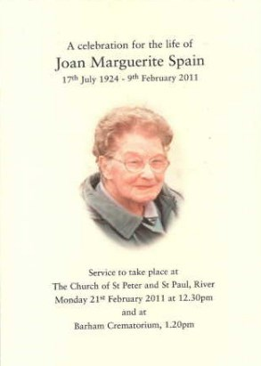

Joan Marguerite Spain (née Thompson) 1924 - 2011
[ Home ] | [ Calendar ] | [ Surnames Index ] | [ Errors ] | [ Family History ]The child of Harold Thompson (a cowman on a farm) and Hetty Page, Joan Thompson, the fourth cousin on the father's side of Nigel Horne, was born in Dover, Kent, England on 17 Jul 19241,2,3 and. She married Edward Spain (with whom she had 1 surviving child, ) in Temple Ewell, Kent, England on 8 Aug 19454. On 29 Sept 1939, she was living at The Bungalow in Temple Ewell1.
She died on 9 Feb 2011 in Walmer, Kent, England3 and was buried at St Peter and St Paul's Church, Minnis Lane, River, Kent after 9 Feb 2011.
Parents
- Harold William was born on 13 Oct 1889
- Hetty Camelia was born on 12 Mar 1889
Citations
- 1939 Register - Findmypast (was the daughter of the head of the household)
- England & Wales births 1837-2006 - Findmypast
- England Billion Graves cemetery index - Findmypast
- England & Wales Marriages 1837-2005 - Findmypast
Media
Spain - Thomson - Gravestone

Dover Express - 17 Aug 1945

Joan Thompson - a celebration of her life

Joan Marguerite Thompson

England & Wales marriages 1837-2008 - BMD/M/1945/3/AZ/001659/109
England & Wales births 1837-2006 - BMD/B/1924/4/AZ/001243/098
1939 Register Transcription - TNA-R39-1815-1815H-015-34
England Billion Graves cemetery index - US/BMD/BILLION/5/000028149446
Family Tree

Map
Generated by ged2site. Last updated on Jul 3, 2024
Known Issues
Burial place (River, Kent, England) has no citations
29 Sep 1939: Not living with either parent in childhood when aged 15
Adding date of burial as 'aft 9 Feb 2011'